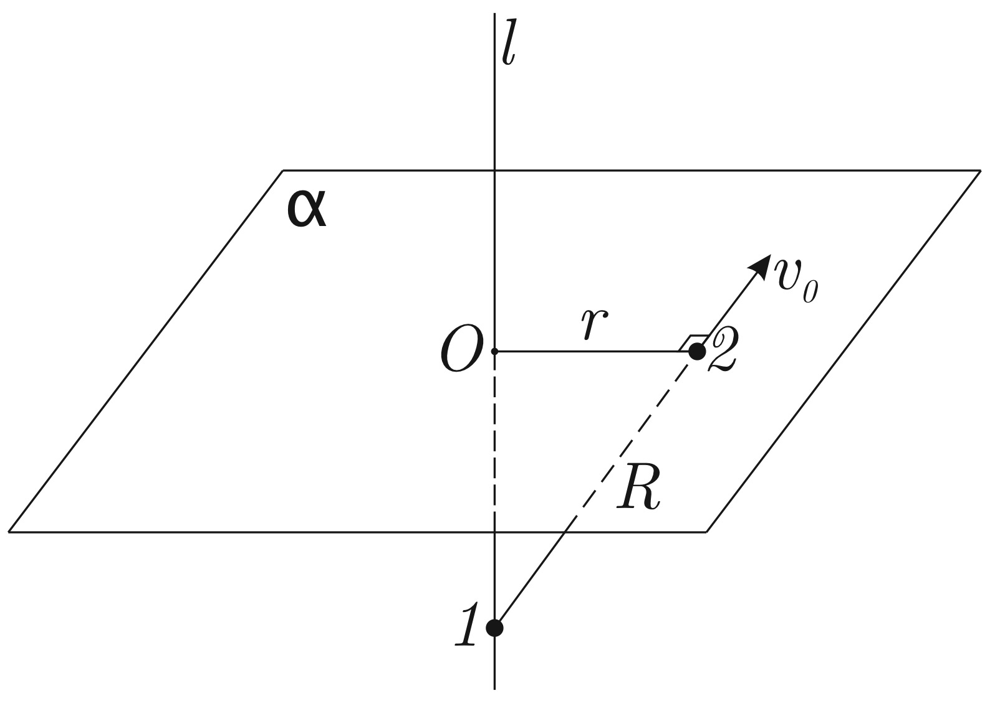

X20 (2020) — English translation
There is a straight line $l$ and a plane $a$. They are perpendicular. Particle 1 can move in a straight line, and particle 2 can move along a plane; the mass of each particle is $m$. Particles are attracted according to the law of gravity. There is no friction.

Now the particles are at equal distances from the point of intersection of the line and the plane, the distance between them is $R$. The particles are given equal velocities $v_0$, lying in the same plane perpendicular to the plane $\alpha$.
Source: https://pho.rs/p/15